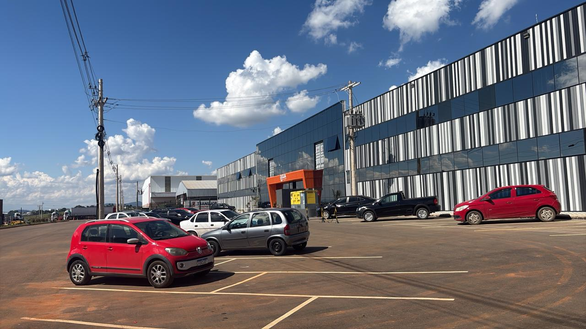

Expertise e compromisso com seus resultados
Fundada com o propósito de transformar a relação das empresas com seus resíduos, nascemos da experiência de profissionais que identificaram a necessidade urgente de soluções sustentáveis e economicamente viáveis.
Com mais de uma década de atuação no mercado, nos especializamos em transformar resíduos em recursos, desenvolvendo programas de coleta seletiva, reciclagem e economia circular para empresas de todos os portes.
Nossa abordagem combina conhecimento técnico em gestão ambiental, compliance com legislações e um compromisso genuíno com a sustentabilidade e o meio ambiente.

Aqui você pode acompanhar mais de pertinho nosso serviço, frota de caminhões novinha, equipamentos atualizados, logística própria e material organizado pronto para entrega.
Promover a gestão sustentável de resíduos através de soluções inovadoras, contribuindo para a preservação ambiental e desenvolvimento econômico das organizações.
Ser referência nacional em consultoria ambiental, reconhecida pela excelência técnica e impacto positivo na redução de resíduos sólidos.
Priorizamos a economia circular, transformando resíduos em recursos e gerando valor.
Engenheiros ambientais, biólogos e especialistas em gestão de resíduos certificados.
Garantimos conformidade com todas as normas e legislações ambientais vigentes.
Relatórios detalhados com métricas de redução, reciclagem e impacto ambiental.
Profissionais experientes e apaixonados por sustentabilidade
Agende uma conversa sem compromisso e descubra como podemos ajudar
Entrar em Contato